Loading ...
|
4-4-2
|
Iraq | 1 | - | 4 | Norway |
4-4-2
|
| HT 1-2 | ||||||
|
FIFA World CupWednesday 17 June 2026
|
||||||
- Venue
- Boston Stadium
- Referee
- Pierre Ghislain Atcho
Goal39'
Aymen Hussein
Assist: Amir Al Ammari
- 2
Substitution59'
Zaid Ismael
Zidane Iqbal
Ali Al Hamadi
Marko Farji
- 2
Substitution73'
Hussein Ali
Mustafa Saadoon
Ali Jasim
Ahmed Qasem
Substitution78'
Ibrahim Bayesh
Mohanad Ali
Yellow card86'
Zaid Tahseen
Whistle45+7'
45+7'
Goal29'
E. Haaland
Assist: D. Møller Wolfe
Goal43'
E. Haaland
- 4
Substitution73'
A. Nusa
A. Schjelderup
F. Aursnes
K. Thorstvedt
D. Møller Wolfe
L. Østigård
A. Sørloth
O. Bobb
Goal76'
L. Østigård
Assist: M. Ødegaard
Substitution81'
M. Ødegaard
P. Berg
Own goal90+6'
Aymen Hussein
Iraq | |
|---|---|
Goalkeeper | |
| 12 | Jalal Hassan |
Defender | |
| 3 | Hussein Ali 73' |
| 4 | Zaid Tahseen 86' |
| 5 | Akam Hashim |
| 23 | Merchas Doski |
Midfielder | |
| 8 | Ibrahim Bayesh 78' |
| 16 | Amir Al Ammari |
| 17 | Ali Jasim 73' |
| 24 | Zaid Ismael 59' |
Forward | |
| 9 | Ali Al Hamadi 59' |
| 18 | Aymen Hussein 39'90+6' |
Substitutes | |
| 10 | Mohanad Ali 78' |
| 11 | Ahmed Qasem 73' |
| 14 | Zidane Iqbal 59' |
| 21 | Marko Farji 59' |
| 25 | Mustafa Saadoon 73' |
Norway | |
Goalkeeper | |
| 1 | Ø. Nyland |
Defender | |
| 3 | K. Ajer |
| 5 | D. Møller Wolfe 73' |
| 17 | T. Heggem |
| 26 | J. Ryerson |
Midfielder | |
| 8 | S. Berge |
| 10 | M. Ødegaard 81' |
| 14 | F. Aursnes 73' |
| 20 | A. Nusa 73' |
Forward | |
| 7 | A. Sørloth 73' |
| 9 | E. Haaland 29'43' |
Substitutes | |
| 4 | L. Østigård 73'76' |
| 6 | P. Berg 81' |
| 18 | K. Thorstvedt 73' |
| 21 | A. Schjelderup 73' |
| 22 | O. Bobb 73' |


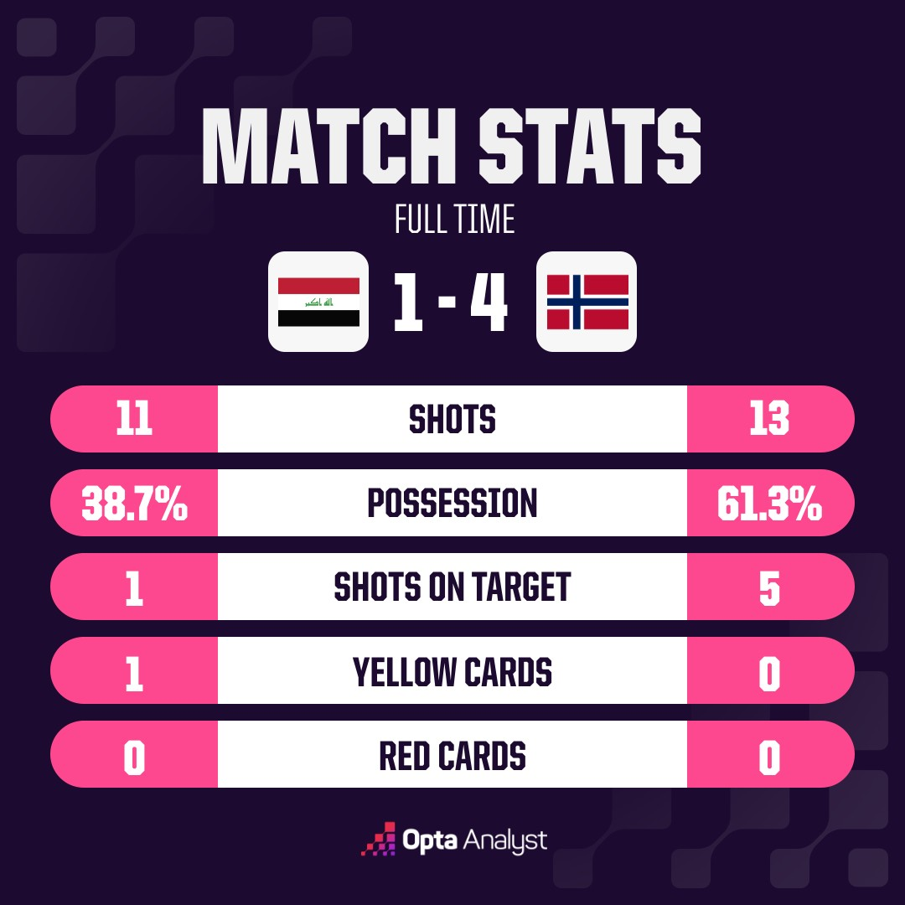

99'
Iraq have lost their last 4 games in the FIFA World Cup, their longest losing streak in the competition (since at least 1965/1966).
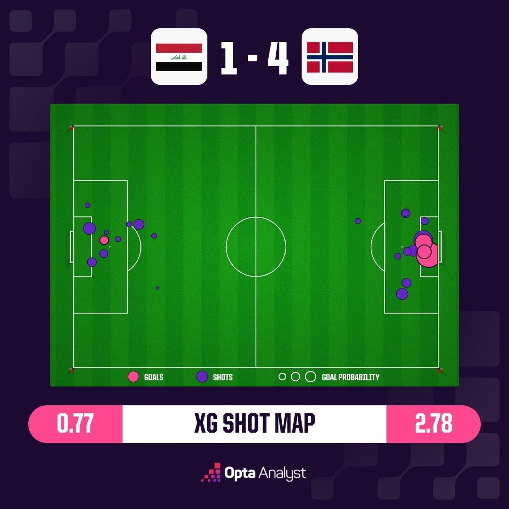
90+8'
FULL-TIME! The referee sounds the final whistle, and it’s all over. Norway get the win, with a 1-4 triumph over Iraq.
90+6'
GOAL! It is getting humiliating for Iraq now! Aymen Hussein has just compounded their misery by turning into their own net! It is now 4-1 to Norway, who are running riot in this match.
90+6'
A chance goes begging as Erling Haaland gets off a shot that does not hit the target. They might have done better with that one, but instead it is a goal-kick to Iraq.
90+6'
Good play from Erling Haaland, who draws a foul from Mustafa Saadoon to hand Norway a free-kick in a dangerous position. Will they create something from this set-piece?
90+5'
Mustafa Saadoon goes in on Andreas Schjelderup and concedes a foul. The free-kick is not in a particularly dangerous area from Iraq’s viewpoint, though.
90+4'
A free-kick to Iraq, as Julian Ryerson goes in and fouls Marko Farji. However, Norway will not mind giving one away in this area too much, with plenty of distance to their goal.
90+3'
It has been 30 minutes since Iraq last attempted a shot in this game.
90+1'
Norway have had plenty of the ball in the last 15 minutes, with 71.52% possession compared to just 28.48% for their opponents. However, there’s not been any goal to come from that possessional dominance just yet.
90+1'
Norway have attempted the last 5 shots in this game, Iraq last shot was taken by Hussein Ali in the 63rd minute.
90+1'
A chance goes begging as Kristian Thorstvedt gets off a shot that does not hit the target. They might have done better with that one, but instead it is a goal-kick to Iraq.
86'
The referee goes to their pocket and pulls out a yellow card, which is brandished in the direction of Zaid Tahseen. Will they be able to avoid a second booking?
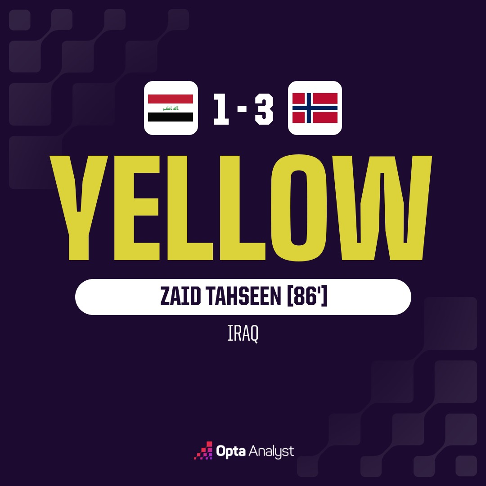
86'
Free-kick! A foul from Zaid Tahseen on Erling Haaland. It is well away from Iraq’s goal, so it is unlikely to result in a chance for Norway.
83'
It's all hands on deck for Norway as they defend their lead, making a wave of critical blocks and clearances
83'
An opportunity for Norway to extend their lead goes begging, as Erling Haaland is unable to convert from a good opening. Will they live to regret that miss?
82'
No luck! Leo Østigård takes on a shot that, had they got it right, might have been set to test the goalkeeper, but instead it is sent off target and Iraq come away unscathed.
82'
Foul! A free-kick now in a dangerous area for Norway, after Erling Haaland is fouled by Zaid Tahseen. Can Norway make the most of this opportunity?
81'
Norway are making a tactical change. Martin Ødegaard is leaving the field and in their place comes Patrick Berg – we will soon see if this switch has the desired impact.
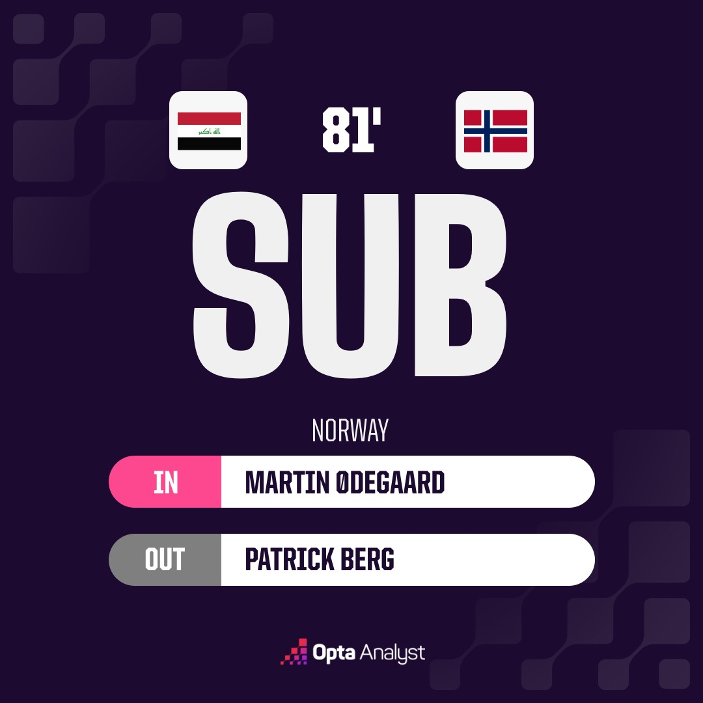
79'
A foul from Erling Haaland on Zaid Tahseen sees Iraq win a free-kick, but it is not in a dangerous position, so Norway should be confident they can defend it easily enough.
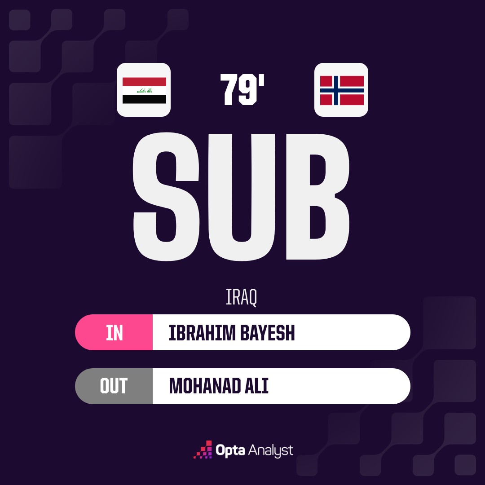
78'
Martin Ødegaard goes in on Merchas Doski and concedes a foul. The free-kick is not in a particularly dangerous area from Norway’s viewpoint, though.
78'
Ibrahim Bayesh’s match is over as Iraq decide to make a substitution. Mohanad Ali enters the field in what looks like a tactical change.
76'
GOAL! Leo Østigård scores, and Norway are now well in front – surely they will go on and see this one out now? It seems a long way back for Iraq, with Norway well in control of this match.
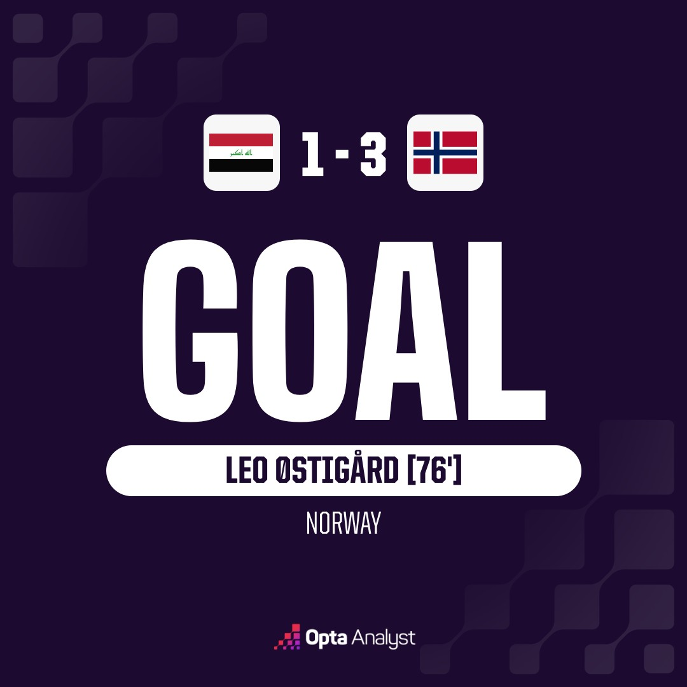
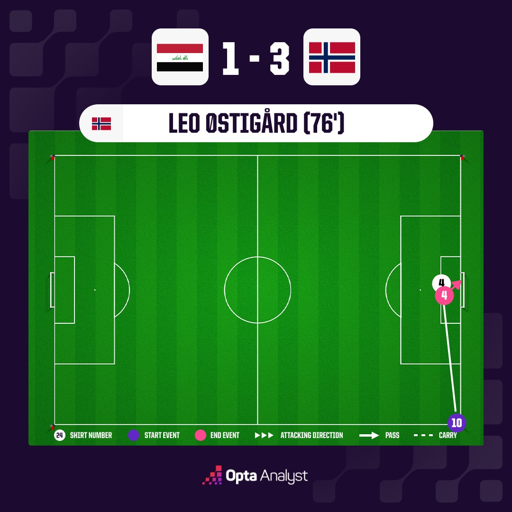
76'
CORNER! The pressure is building for Norway as they win a set-piece after Kristian Thorstvedt's attempt is blocked by Merchas Doski and diverted out of play.
76'
With 15 minutes of normal time remaining, it is Norway who have had more of the ball, with 60.34% compared to Iraq’s 39.66%.
75'
Textbook game management from Norway after the break. They're stroking the ball around with confidence, making Iraq work for every touch while protecting that precious lead.
73'
A change for Iraq, as they are forced into a substitution with Ali Jasim having sustained an injury. Ahmed Qasem is coming on for Iraq now.
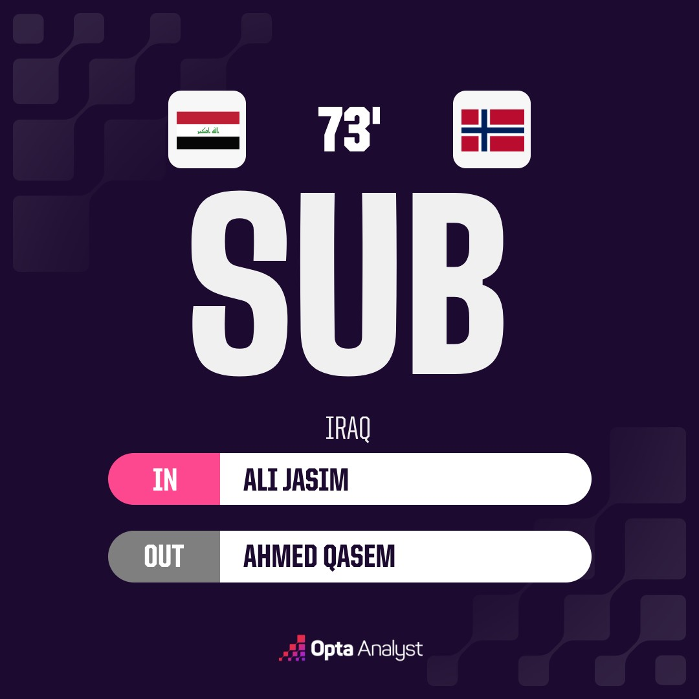
73'
Iraq are making a tactical change. Hussein Ali is leaving the field and in their place comes Mustafa Saadoon – we will soon see if this switch has the desired impact.
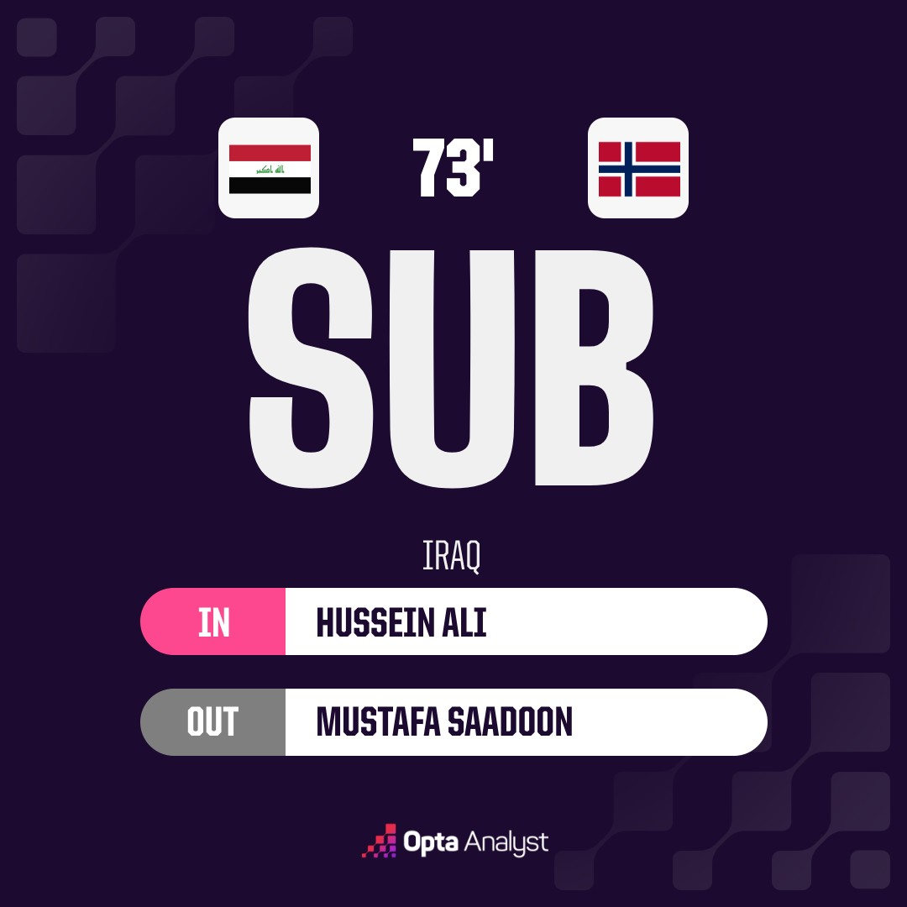
73'
No goalmouth action for some time now, with neither team having had a shot in the past 10 minutes. Will there be a moment that changes things soon? Norway have seen plenty of the ball, however, with 60 per cent of the possession in their favour during that period.
73'
Substitution! Oscar Bobb replaces Alexander Sørloth for Norway as the manager shuffles the pack. Can Oscar Bobb make an impression as this match continues?
73'
David Møller Wolfe appears to have sustained an injury, and is unable to carry on. They make way for Leo Østigård.
73'
Substitution! Kristian Thorstvedt replaces Fredrik Aursnes for Norway as the manager shuffles the pack. Can Kristian Thorstvedt make an impression as this match continues?
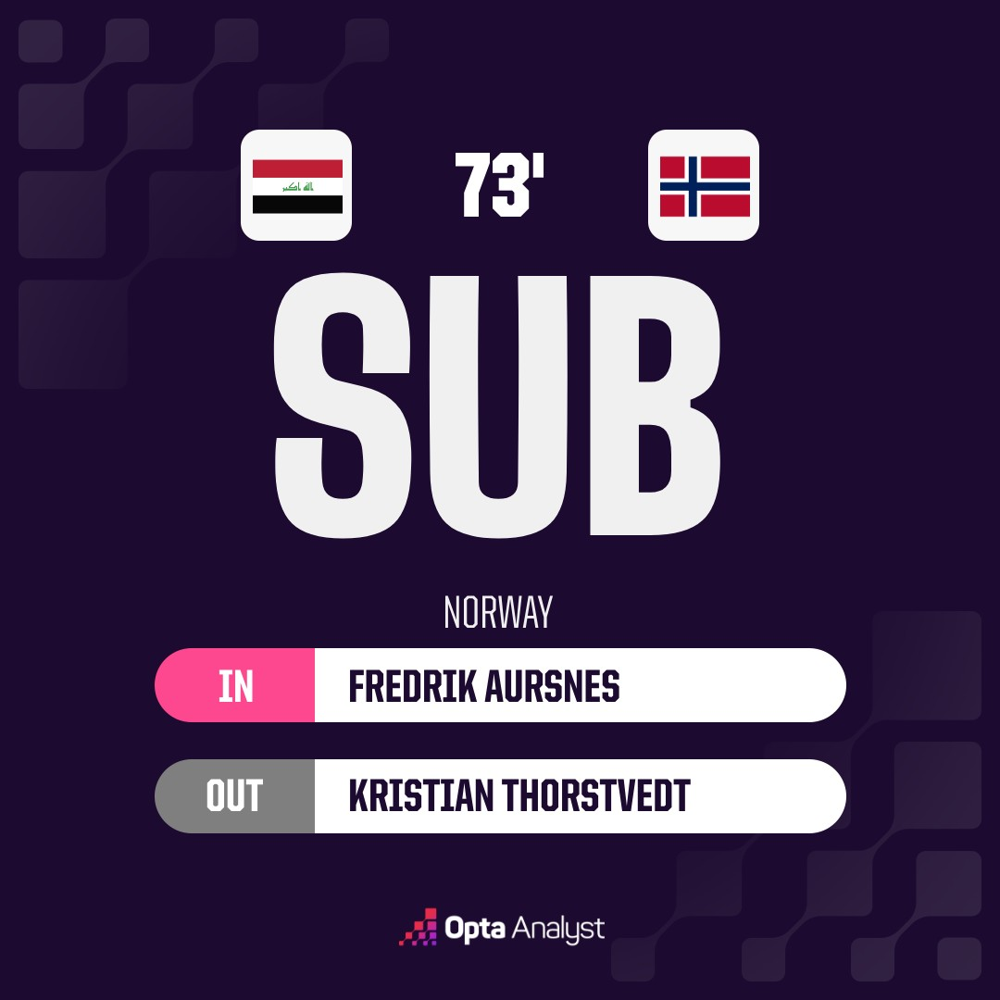
73'
It has been 30 minutes since Norway last attempted a shot in this game.
73'
The Norway manager is looking to the substitutes’ bench, bringing on Andreas Schjelderup in place of Antonio Nusa. Will the change make a difference? Let’s find out!
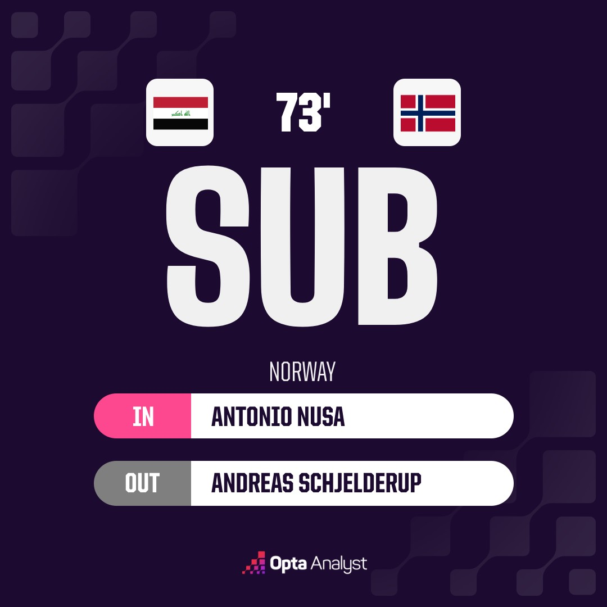
68'
Still behind, but Iraq are refusing to roll over - defensive urgency rising as they fend off more pressure and push for a late turnaround.
66'
With 65 minutes gone, it is Norway who lead the shot count, with 7 to Iraq’s 11. Norway have got 3 of those on target, while Iraq have managed to get 1 on target.
64'
Alexander Sørloth goes in on Merchas Doski and concedes a foul. The free-kick is not in a particularly dangerous area from Norway’s viewpoint, though.
63'
Iraq have attempted the last 7 shots in this game, Norway last shot was taken by Erling Haaland in the 43rd minute.
63'
MISS! A shot from Hussein Ali ends up being off target. They might have done a bit better with that one, but it remains Iraq 1-2 Norway.
63'
Neither team has had a shot in the past 10 minutes, as this match just enters something of a down period. Norway have seen more of the ball, with 63 per cent possession, but Iraq are keeping them away from goal. There is still a chance the match will spark into life, though.
61'
Still behind, but Iraq are refusing to roll over - defensive urgency rising as they fend off more pressure and push for a late turnaround.
59'
Ali Al Hamadi’s match is over as Iraq decide to make a substitution. Marko Farji enters the field in what looks like a tactical change.
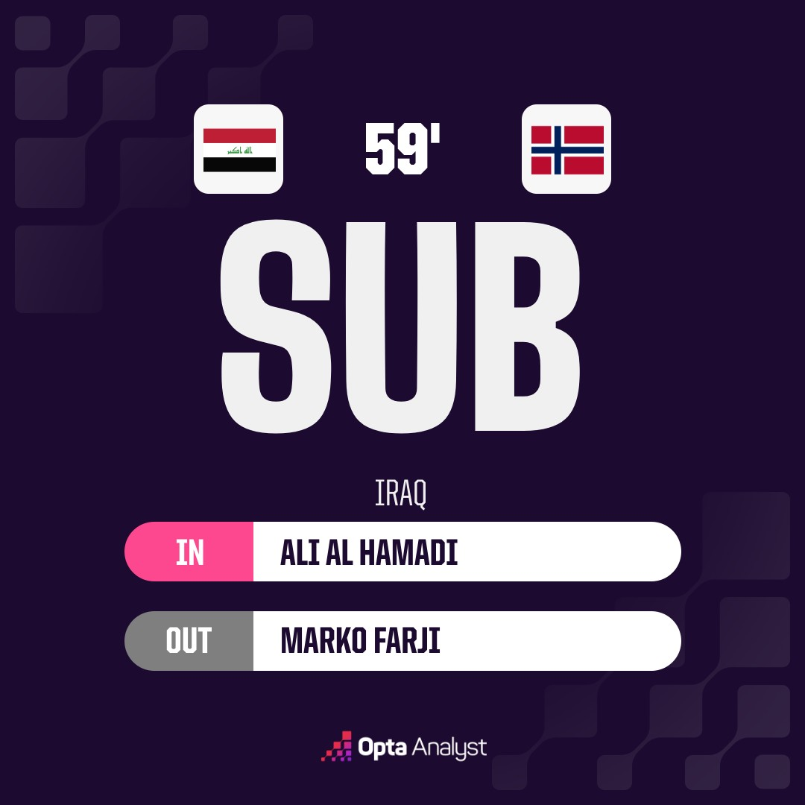
59'
Zaid Ismael’s match is over as Iraq decide to make a substitution. Zidane Iqbal enters the field in what looks like a tactical change.
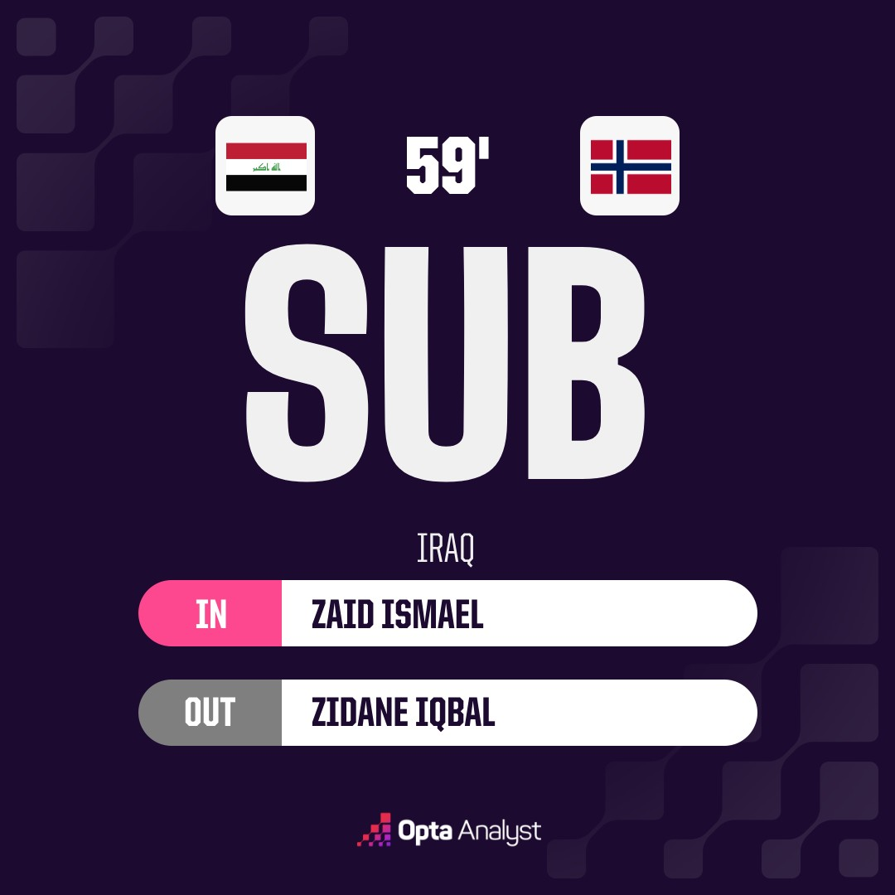
55'
Despite trailing, Iraq are showing real defensive grit, digging in and stopping further damage as they try to build a platform.
54'
A free-kick in a dangerous position now for Norway, after a foul from Hussein Ali on Antonio Nusa. Can Norway make Iraq pay for that rashness from Hussein Ali?
54'
A free-kick to Norway, as Amir Al Ammari goes in and fouls Martin Ødegaard. However, Iraq will not mind giving one away in this area too much, with plenty of distance to their goal.
53'
MISS! The score remains 1-2, with Norway relieved after Iraq’s Aymen Hussein goes for goal but sends their attempt off target. Not one to write home about, that one.
50'
Great defending from Norway, who are staying organised and winning key battles to preserve their lead.
49'
A foul from Aymen Hussein on David Møller Wolfe sees Norway win a free-kick, but it is not in a dangerous position, so Iraq should be confident they can defend it easily enough.
47'
That’s offside! A switched-on defensive line from Norway, as they step up at the right time to catch Hussein Ali offside, and the assistant referee’s flag is up.
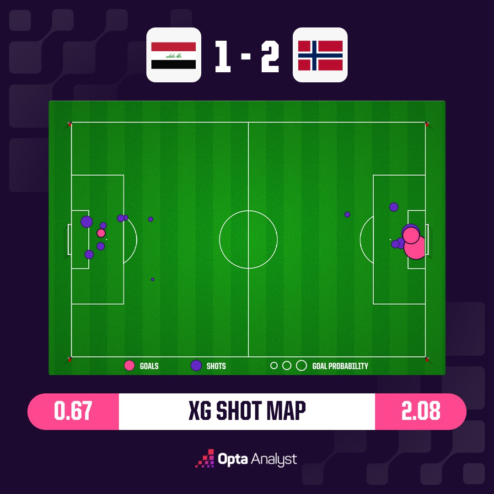
45+7'
The first half comes to a close and it’s Norway who have the lead over Iraq at Boston Stadium, with the scoreline 1-2 at the interval. Will Iraq turn this around after the break?
45+6'
A chance goes begging as Akam Hashim gets off a shot that does not hit the target. They might have done better with that one, but instead it is a goal-kick to Norway.
45+5'
Ali Al Hamadi's effort is deflected out for a corner. Can Iraq make anything of this set-piece?
45+4'
That is a disappointing effort from Zaid Tahseen, who went for glory but got their attempt wrong, and the shot sailed off target. A frustrating moment for Iraq.
45+3'
A barrage of deliveries from Iraq, who are pushing hard to force the equaliser.
45+3'
WHAT A MISS! Oh dear, oh dear, that is an awful attempt from Ibrahim Bayesh, as a huge chance for Iraq to score the goal they need goes begging. What a let off for Norway, though. They will have to defend better than that from here on out!
45+3'
That is a disappointing effort from Ali Al Hamadi, who went for glory but got their attempt wrong, and the shot sailed off target. A frustrating moment for Iraq.
45+2'
Erling Haaland goes in on Akam Hashim and concedes a foul. The free-kick is not in a particularly dangerous area from Norway’s viewpoint, though.
45+1'
A rash challenge from David Møller Wolfe, who sends Zaid Tahseen tumbling, giving Iraq a free-kick. It is not in a threatening position, but it gives them a chance to get back on the ball.
43'
GOAL! The drama continues as Norway take the lead, courtesy of a goal from Erling Haaland. There is still plenty of time remaining for more potential twists and turns, but as things stand Norway are on track for victory.
43'
MISSED! That is really poor from Erling Haaland, who fails to convert from a golden opportunity, with the goal gaping. Will Norway pay for their profligacy, or can they put that miss behind them?
39'
GOAL! Aymen Hussein scores from inside the penalty area and it’s all level between Iraq and Norway. All to play for now, can either side go on and find a winner?
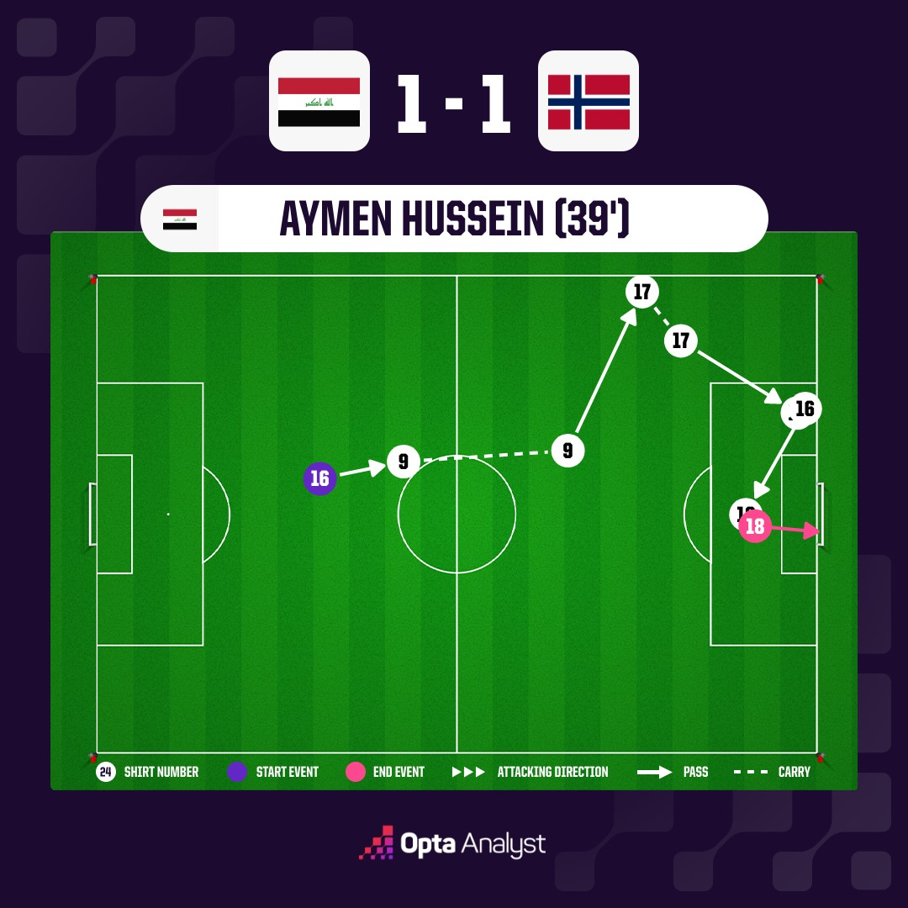
37'
Free-kick! A foul from Alexander Sørloth on Merchas Doski. It is well away from Norway’s goal, so it is unlikely to result in a chance for Iraq.
37'
MISS! A shot from Martin Ødegaard ends up being off target. They might have done a bit better with that one, but it remains Norway 1-0 Iraq.
36'
Free-kick! A foul from David Møller Wolfe on Ibrahim Bayesh. It is well away from Norway’s goal, so it is unlikely to result in a chance for Iraq.
35'
A rash challenge from Aymen Hussein, who sends Alexander Sørloth tumbling, giving Norway a free-kick. It is not in a threatening position, but it gives them a chance to get back on the ball.
33'
A rash challenge from Sander Berge, who sends Jalal Hassan tumbling, giving Iraq a free-kick. It is not in a threatening position, but it gives them a chance to get back on the ball.
31'
Shot blocked! Alexander Sørloth unleashes an attempt at goal, but the ball does not reach its target thanks to Zaid Tahseen, who makes a solid block to stem the danger – for now.
29'
GOAL! Erling Haaland scores! Norway have the lead in this entertaining contest. There is still lots of time left for further drama, but that intervention from Erling Haaland has put Iraq in a difficult position. Game on!
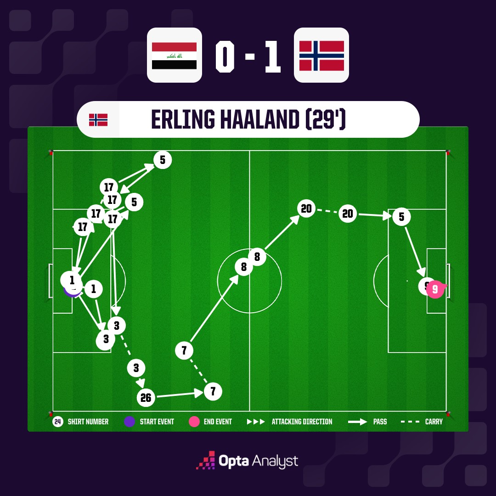
28'
A chance goes begging as Zaid Tahseen gets off a shot that does not hit the target. They might have done better with that one, but instead it is a goal-kick to Norway.
24'
Free-kick! A foul from David Møller Wolfe on Ibrahim Bayesh. It is well away from Norway’s goal, so it is unlikely to result in a chance for Iraq.
24'
Shot blocked! Alexander Sørloth unleashes an attempt at goal, but the ball does not reach its target thanks to Akam Hashim, who makes a solid block to stem the danger – for now.
24'
Norway have had plenty of the ball in the last 15 minutes, with 67.76% possession compared to just 32.24% for their opponents. However, there’s not been any goal to come from that possessional dominance just yet.
22'
A free-kick in a dangerous position now for Norway, after a foul from Zaid Ismael on Antonio Nusa. Can Norway make Iraq pay for that rashness from Zaid Ismael?
20'
That is a disappointing effort from Erling Haaland, who went for glory but got their attempt wrong, and the shot sailed off target. A frustrating moment for Norway.
19'
It is a corner now to Norway, with Iraq somewhat hanging on here as they look to hold out for a positive result. Can Norway make something of this set-piece opportunity?
17'
Zaid Tahseen goes in on Sander Berge and concedes a foul. The free-kick is not in a particularly dangerous area from Iraq’s viewpoint, though.
13'
MISS! A shot from Ali Al Hamadi ends up being off target. They might have done a bit better with that one, but it remains Iraq 0-0 Norway.
10'
A rash challenge from Ali Al Hamadi, who sends Kristoffer Ajer tumbling, giving Norway a free-kick. It is not in a threatening position, but it gives them a chance to get back on the ball.
9'
It’s been tight so far, and Norway are making sure it stays that way with strong defensive discipline and well-timed clearances.
8'
A foul from Julian Ryerson on Merchas Doski sees Iraq win a free-kick, but it is not in a dangerous position, so Norway should be confident they can defend it easily enough.
6'
Free-kick! A foul from Alexander Sørloth on Akam Hashim. It is well away from Norway’s goal, so it is unlikely to result in a chance for Iraq.
5'
No luck! Aymen Hussein takes on a shot that, had they got it right, might have been set to test the goalkeeper, but instead it is sent off target and Norway come away unscathed.
4'
A rash challenge from Torbjørn Heggem, who sends Aymen Hussein tumbling, giving Iraq a free-kick. It is not in a threatening position, but it gives them a chance to get back on the ball.
1'
Kick-off! Up and running at Boston Stadium, with Iraq getting the ball rolling. Who will come out on top?
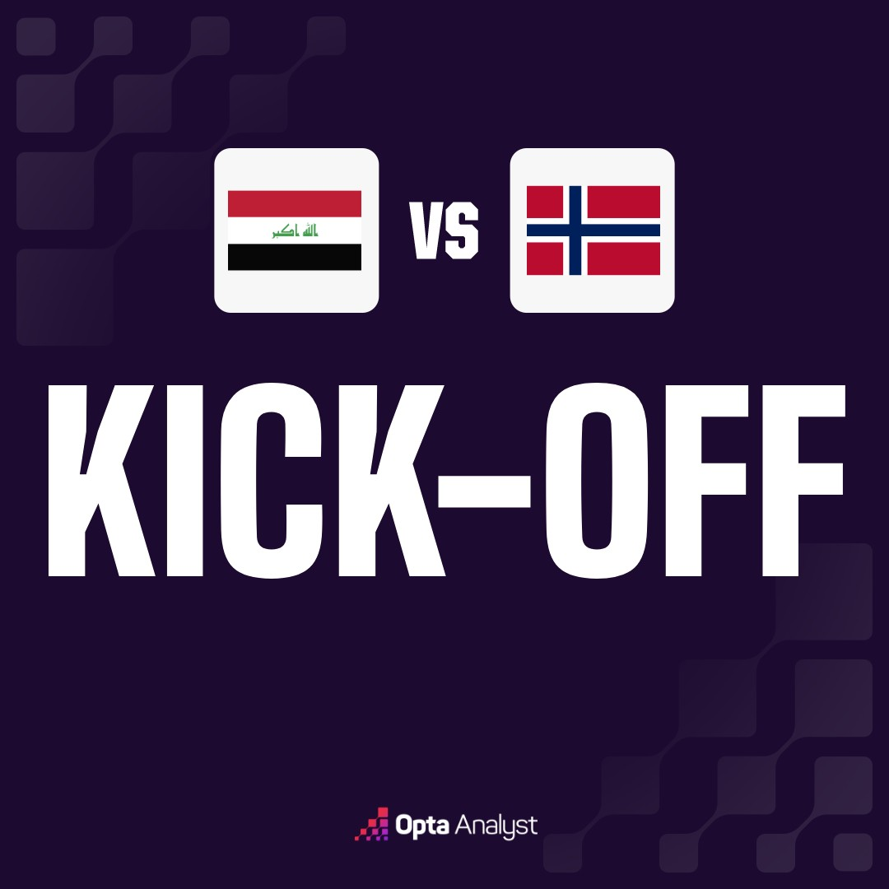
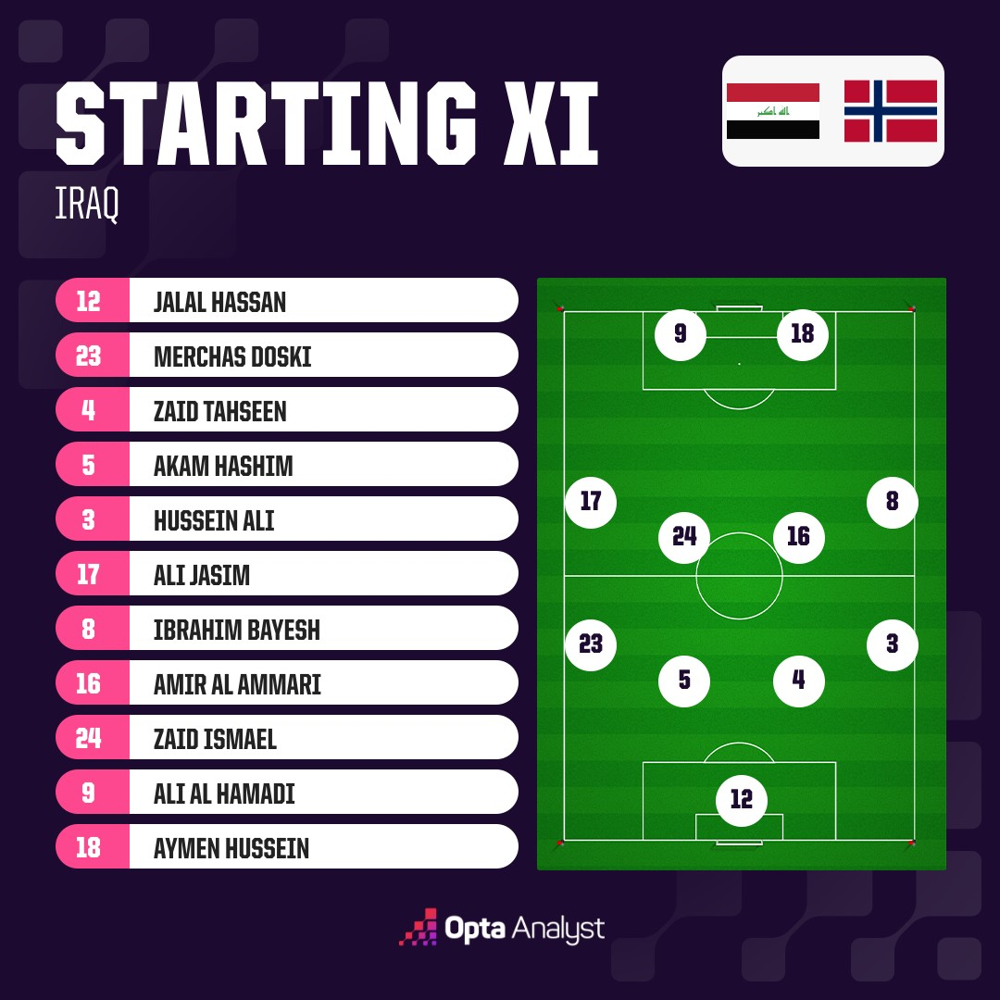
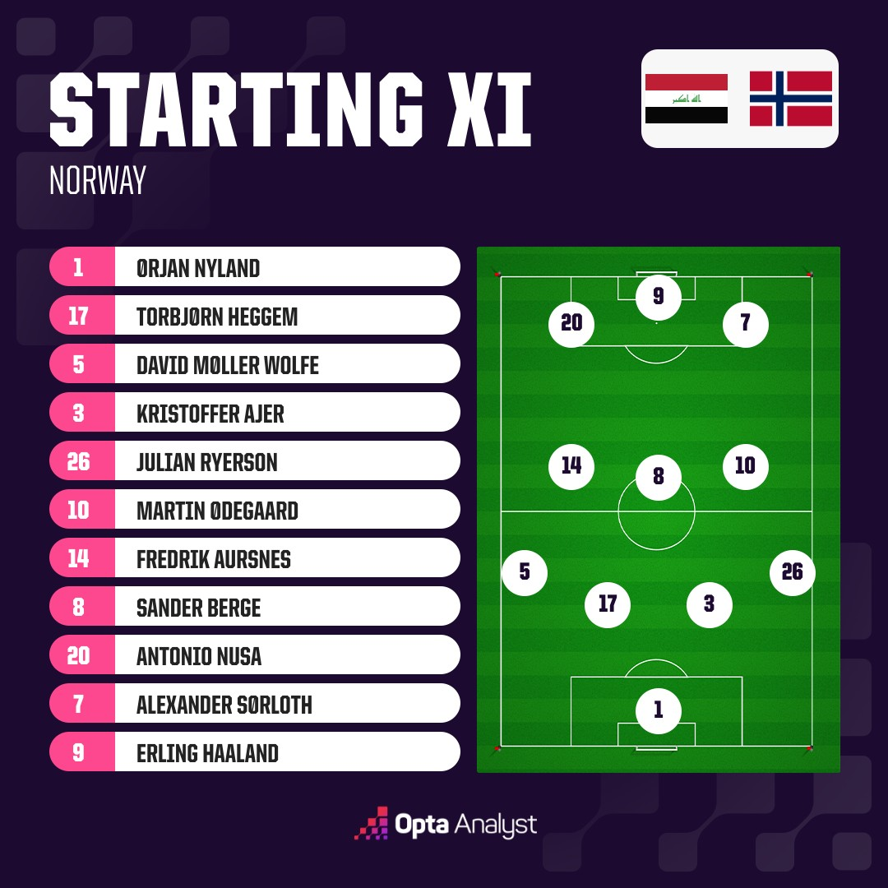
There have been 3 or more goals scored in each of Norway's last 4 games
Norway have won their last 5 away matches in a row
Norway have won their last 10 matches in a row
Norway, unbeaten in three straight games, will put their run on the line at Boston Stadium against Iraq in the FIFA World Cup group stage on Tuesday.
Both sides are playing their first match of the competition. Iraq slumped to their first defeat this year, falling 2-0 against Venezuela in their last match, a June 9 friendly at SeatGeek Stadium. In four games this year, they have two wins, one draw, and one loss.
Norway played out a 1-1 draw against Morocco in their last game, a June 7 friendly at Sports Illustrated Stadium, improving their unbeaten streak to three games in all competitions. Martin Ødegaard scored in the draw. In 2026, they have won one, drawn two, and lost one.
Iraq have been led by Ali Al Hamadi, Aymen Hussein, and Merchas Doski this year. The three players are the team's joint top scorers with one goal apiece. Norway's most productive player in the final third in 2026 has been Jørgen Strand Larsen, who has scored twice.
In their last six matches in all competitions, Iraq have won two, drawn one and lost three. The Iraqi side scored four and conceded seven in that period, scoring first in two of the six contests. A majority of their goals (three) came in the first half, while their opponents netted five times in the first 45 minutes. Norway have won three, drawn two and lost one in their last six. The Norwegian side scored 13 and conceded six in that stretch, netting first in three of the six. They had four goals in the first half, while their opponents netted three times before the break.
-
General
Possession 38.7% 38.74261.25861.3% Possession lost in defensive half 33 332424 Possession lost in middle third 40 404141 Duels 100 100100100 Duels success rate 52.0% 524848.0% Aerial duels 26 262626 Aerial duels won 38.5% 38.46261.53861.5% Successful dribbles 10 1055 Fouls won 13 131212 Offsides 1 100 Corner awarded 2 255 -
Distribution
Passes 333 333535535 Long passes 53 534242 Long passes proportion (%) 15.9% 15.9167.857.9% Passing accuracy 81.4% 81.38188.97289.0% Passes in opponents' half 152 152218218 Passing accuracy in opponents' half (%) 70.4% 70.39583.02883.0% Total passes in the final third 75 759898 Passing accuracy in final third (%) 61.3% 61.33373.46973.5% Forward passes 209 209309309 Forward passes (%) 62.8% 62.76357.75757.8% Through balls 1 100 Final third entries 43 434545 Penalty area entries 23 232727 Total open play crosses 11 111010 Crosses 13 131717 Crossing accuracy 46.2% 46.15441.17641.2% -
Attack
Goals 1 144 Shots 11 111313 Shots on target 1 155 Blocked shots 2 233 Headed shots 4 455 Shots outside the box 3 311 Shots inside the box 8 81212 Shots accuracy excluding blocked shots 11.1% 11.1115050.0% Shooting accuracy 9.1% 9.09138.46238.5% Key Passes 8 81010 -
Defence
Tackles 19 191616 Tackles success rate 68.4% 68.42162.562.5% Clearances 21 212222 Interceptions 5 533 Recoveries 35 353636 Attacking third recovery 1 133 Defensive third recovery 16 161818 Midfield third recovery 18 181515 Recoveries in attacking half (%) 2.9% 2.8578.3338.3% -
Discipline
Fouls conceded 12 121313 Yellow cards 1 100 Red cards 0 000